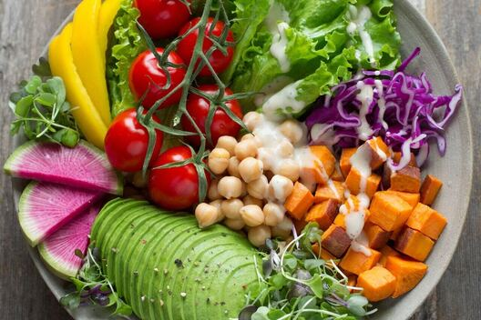

Välkommen till bloggen!
Här kan du läsa artiklar om maten vi serverar och tips om hur du håller dig fokuserad

Photo by Anna
Pelzer on Unsplash
Avokadosallad: Nyckeln till att hålla fokus
Utforska kraften i avokado, en supermat som inte bara smakar gott utan också boostar din
koncentration. Lär dig hur DayNight Cafe's avokadosallader kan bli din nästa favoritmåltid för fokus
och energi.
Läs Avokadosallad: Nyckeln till att hålla fokus

Photo by Toa
Heftiba on Unsplash
Varför ska man studera på ett kafé?
Studera på kafé: mer än bara en trend. Utforska de oväntade fördelarna med att byta hemmakontoret mot
kaféets atmosfär.
Läs Varför ska man studera på ett kafé?

Photo by Anton
on Unsplash
Falafeltallrik: En vegansk delikatess
Falafel: en global vegansk favorit med rötter i Mellanöstern. Utforska denna näringsrika delikatess
och dess betydelse för fokus under studier
Läs Falafeltallrik: En vegansk delikatess

Photo by Natanja
Grün on Unsplash
Kaffets magi på DayNight Cafe
Upptäck kvaliteten bakom varje kopp kaffe på DayNight Cafe. Lär dig hur vår noggranna urvalsprocess
bidrar till ökad produktivitet och fokus.
Läs Kaffets magi på DayNight Cafe